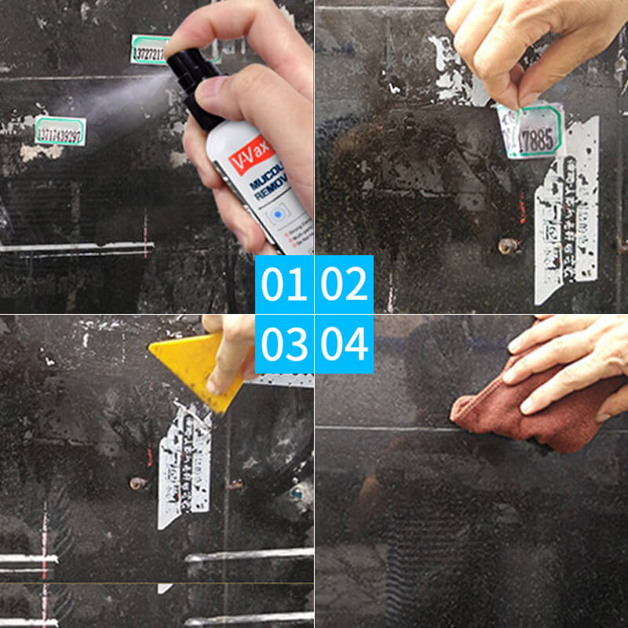

Viscose Killer! Never Worry About Stubborn Glue Stains Again!
EASY - Effortlessly! One spray and one shovel to remove glue easily.
Suitable - Adhesives, sealants, wet paint, glue, grease, dirt, asphalt, ink, marker, tar, wax, oil, etc. Anyone who encounters glue stains that are difficult to remove!
Remove Sticky Paste
Suitable for removing residues from stickers, wax, markers, crayons, window decals, glue, labels, etc. Professional-Designed for handling difficult and sticky tasks (commercial & domestic).
Suitable For Home Use
Easily remove furniture tags, various glue residues, stains around the room, etc.
Widely Used
Suitable for ceramic/porcelain, wood, plastic, glass, metal, and painted surfaces. Help remove stickers, wet paint, or oil from the car.
Using Methods
Just pour an appropriate amount of remover on the stain and wipe it off with a rag.
Strong Remove Glue Marks
Contains special dissolving factors, penetrates and softens, and quickly cleans stubborn sticky substances. Powerful to remove glue, clean without traces.

Wide Range Of Uses
Suitable for removing residues from Adhesives, sealants, wet paint, glue, ink, tar, etc. Professional-Designed for handling difficult and sticky tasks (Car & Family).
Suitable For Teachers & Parents
Remove chewing gum, tape, crayons, and sticker residue left by children.
Safe Without Hurting The Surface
Pure natural raw materials can remove sticky substances without damaging the metal paint surface, non-corrosive. Active ingredients fill the space with a pleasant scent.
Specification
Net content: 50ML
Status: Liquid
Ingredients: Pure natural raw materials
Package Contents: Multifunctional Glue Remover × 1 bottles
Warm Tip: Dear buyer, due to the lighting effect, monitor's brightness, manual measurement, etc, there could be some slight differences in the color and size between the photo and the actual item. Sincerely hope that you can understand! Thank you!